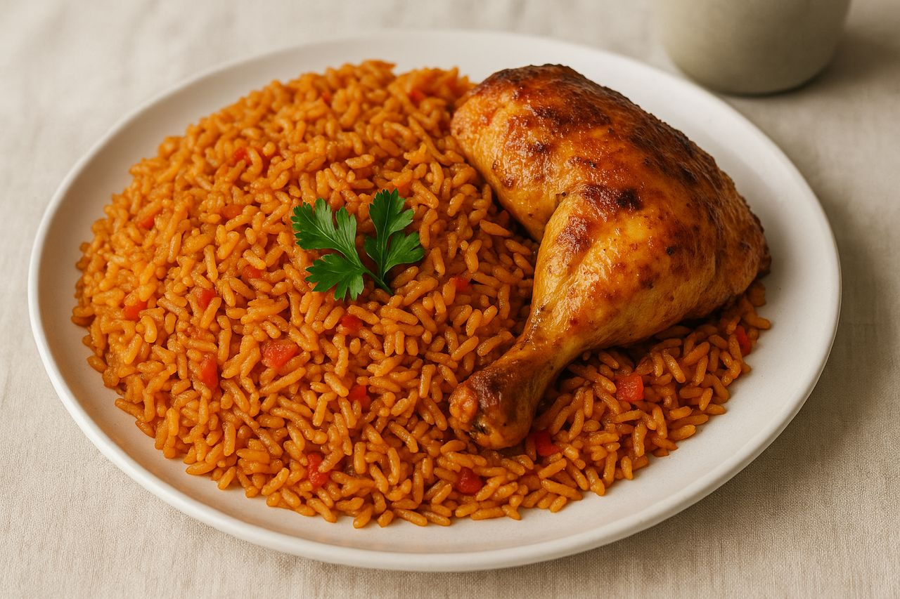

Authentic Nigerian Jollof Rice
This recipe will guide you in creating a truly authentic Nigerian Jollof Rice.
A delicious, smoky, and spicy one-pot dish that is a staple at celebrations and gatherings.
This version is an intermediate level recipe that promises a rich, flavorful, and unforgettable meal.

Recipe Information
- Preparation Time: 30 minutes
- Cooking Time: 1 hour
- Servings: 6 people
- Difficulty: Intermediate
Ingredients
- 4 cups long-grain parboiled rice
- 6 medium-sized fresh tomatoes
- 2 large red bell peppers (Tatashe)
- 1 large onion
- 2-3 scotch bonnet peppers (Ata rodo), adjust to taste
- 1/2 cup tomato paste
- 1/2 cup vegetable oil
- 3 seasoning cubes
- 1 tablespoon curry powder
- 1 teaspoon dried thyme
- Salt to taste
- 4 cups chicken stock
Instructions
- Rinse the parboiled rice with hot water and set it aside to drain. This helps remove excess starch.
- In a blender, combine the fresh tomatoes, red bell peppers, half of the onion, and scotch bonnet peppers. Blend until smooth.
- Heat the vegetable oil in a large pot. Fry the remaining chopped half of the onion until fragrant. Add the tomato paste and fry for about 5 minutes, stirring continuously.
- Pour the blended tomato and pepper mixture into the pot. Add the seasoning cubes, curry powder, thyme, and salt. Stir well and let it simmer for about 15-20 minutes until the water has reduced and the sauce is thick.
- Pour the chicken stock into the sauce and bring it to a boil. Once boiling, stir in the parboiled rice. Make sure the liquid level is just enough to cover the rice.
- Reduce the heat to low, cover the pot tightly with aluminum foil or a lid, and let it cook for 25-30 minutes, or until the rice is tender and the liquid has been absorbed. Avoid opening the pot frequently to retain the steam.
- Fluff the rice with a fork and serve hot.
Additional Tips
For a smokier flavor, some cooks add a few bay leaves to the pot while the rice is cooking.
You can also add some butter or margarine at the end for an extra-rich taste and aroma.